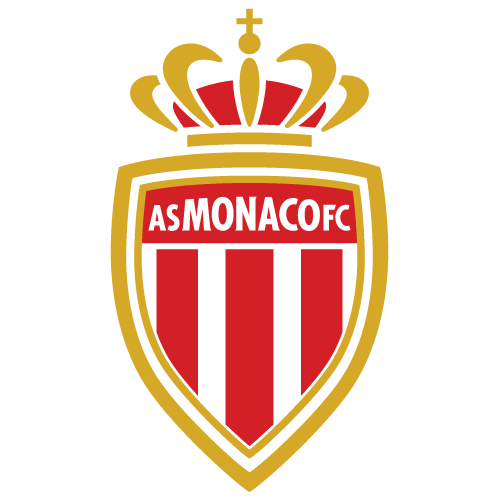
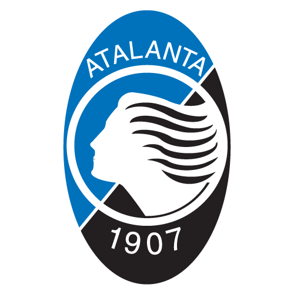

Naše storitve
Naša storitev ponuja celovito skavtsko podporo za nogometne klube in igralce po Sloveniji. Specializirani smo za odkrivanje talentov, analizo zmogljivosti in razvoj karier mladih nogometašev. S pomočjo našega strokovnega tima in sodobnih tehnologij zagotavljamo natančne ocene, prilagojene treninge in strateške nasvete za napredovanje v karieri. Povezujemo igralce s klubi ter nudimo celostno podporo pri pogodbah in prestopih. Naša zaveza je razvoj slovenskega nogometa in pomoč igralcem pri doseganju njihovih največjih potencialov. Skupaj gradimo prihodnost slovenskega nogometa!
Skavting
Odkrivamo najboljše nogometne talente. Z nami so dolga leta že Evropsko priznani skavti: Almir Aka Krcić, Calvin Kleinović in Aleksander Dojčinović. Skavting temelji na poglobljeni analizi, sodobnih metodah in osebnem pristopu, kar omogoča natančno oceno potenciala vsakega igralca. Naša ekipa zagotavlja strokovno podporo in vodstvo, ki je ključnega pomena za uspešno kariero v nogometu.
Trening


V našem centru za nogometne talente združujemo vrhunsko infrastrukturo z najboljšimi trening metodami, kar omogoča igralcem, da razvijejo svoj polni potencial. Razpolagamo s tremi velikimi članskimi nogometnimi igrišči, od katerih je eno od NK Triglav, ter dodatno dve lastni igrišči. Poleg tega imamo dva fitnesa s osebnimi fitnes trenerji, ki skrbijo za individualen pristop k kondicijski pripravi igralcev.
V našem centru imamo tudi napredno opremljeno sobo za timske videoanalize, kjer analiziramo tekme in treninge z uporabo najnovejše tehnologije. Tri sobe z televizorji gostijo dokumentarce o profesionalnih in pol-profesionalnih nogometaših, ki služijo kot navdih in vir motivacije za naše igralce.
Za zagotavljanje vrhunskega zdravja in kondicije naši igralci lahko koristijo timsko kuhinjo, kjer naš osebni kuhar pripravlja vitaminske napitke in uravnotežene obroke. Dodatno imamo na voljo savno za sprostitev po napornih treningih ter olimpijski bazen za regeneracijo in izboljšanje vzdržljivosti.
Naša strast in zavezanost razvoju nogometnih talentov sta temelj našega centra. Skupaj gradimo prihodnost slovenskega nogometa z najnaprednejšo podporo in infrastrukturo, ki je na voljo na enem mestu.
Promocija
Promocija talentov v profesionalne klube:
 Z vsemimi naštetimi klubi smo redno v kontaktih.
Naša ekipa
Haris Medunjanin
Ustanovitelj in direktor
Srečko Katanec
Glavni trener
Almir "Aka" Krcić
Vodja skavtinga in skavting ekipe
Mnenja strank

"SFSA nam je našemu sinu pomagala najti klub. Hvaležni smo!" - Marko P.
"Zahvaljujoč SFSA sem dobil priložnost igrati profesionalni nogomet." - Luka T.
Kontaktirajte nas
Email: info@sfsa.si
Telefon: +386 40 123 456
Naslov: Paplerjeva ulica 20, 4000 Kranj, Slovenija